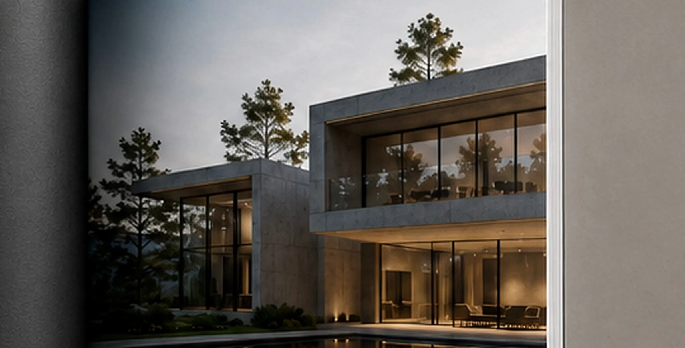
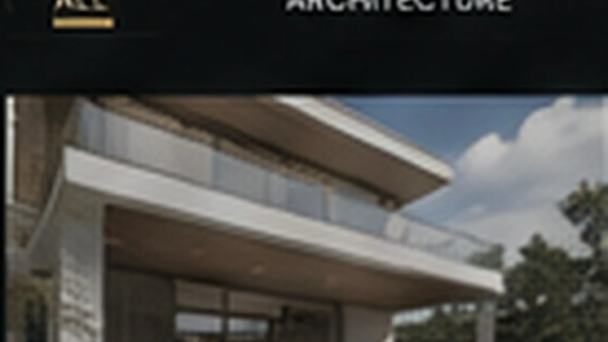
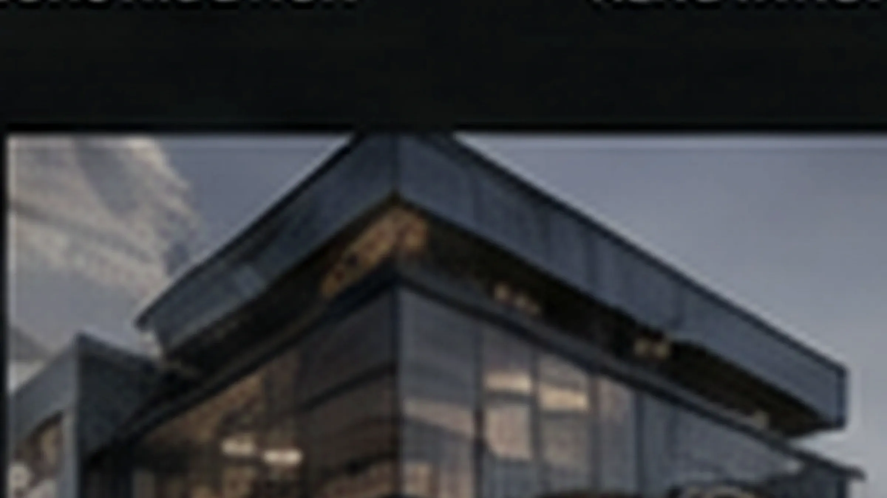
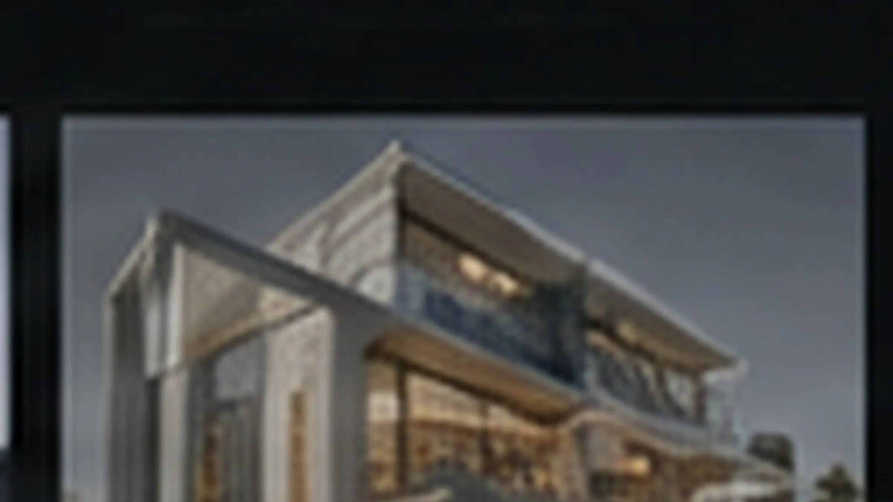
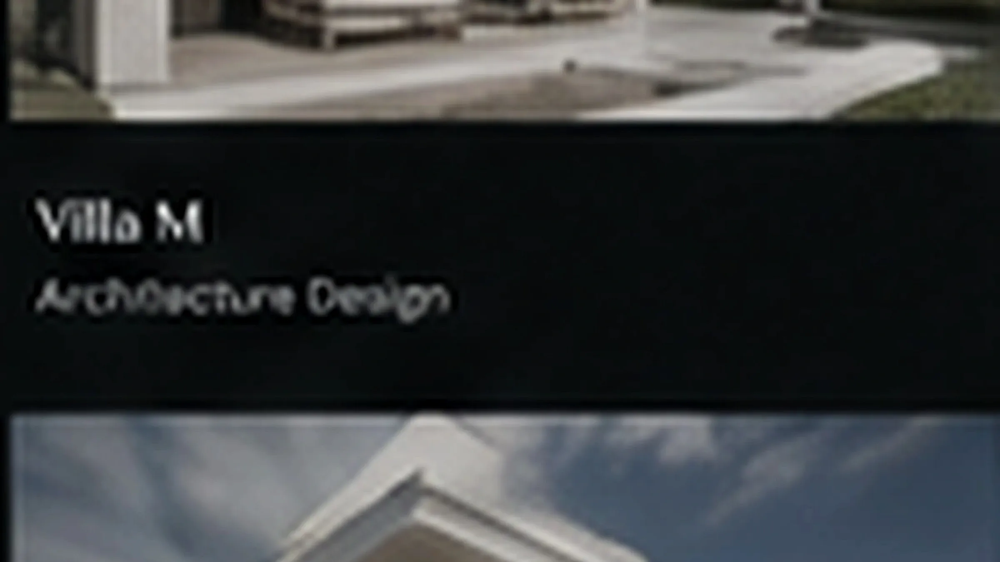
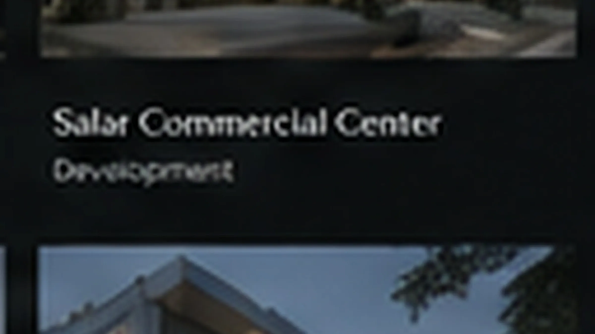
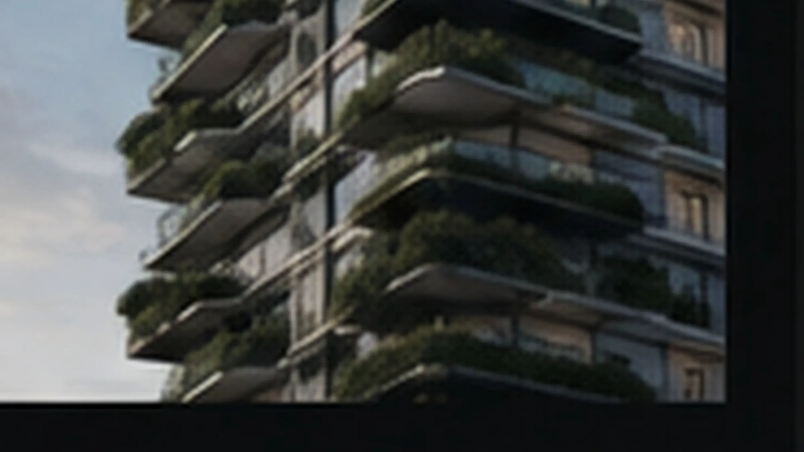
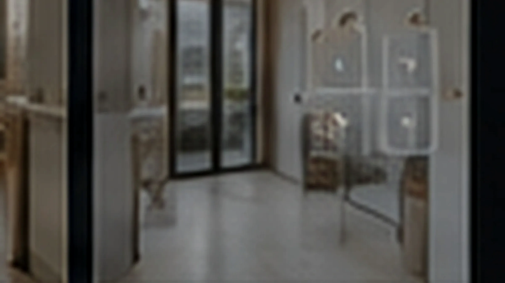
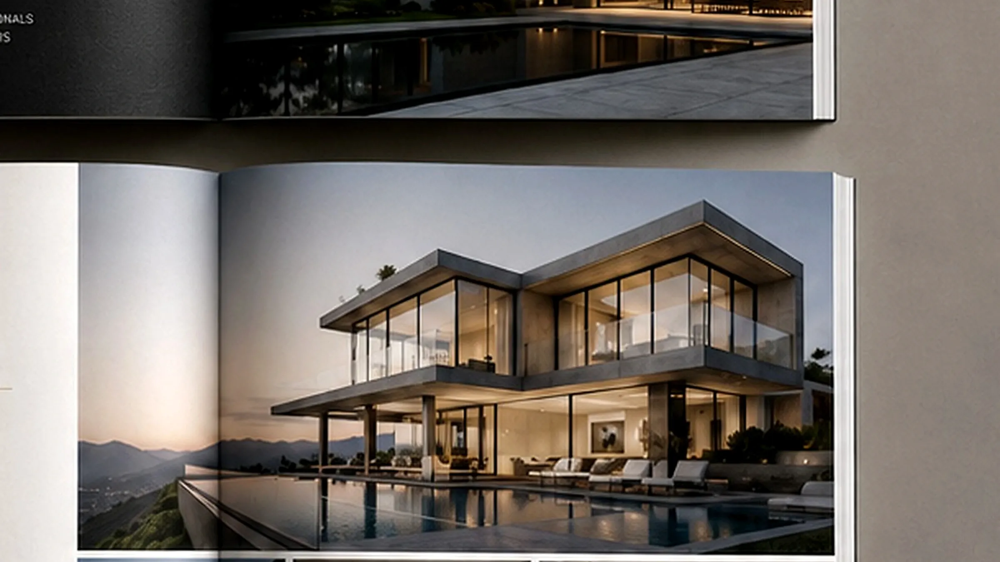
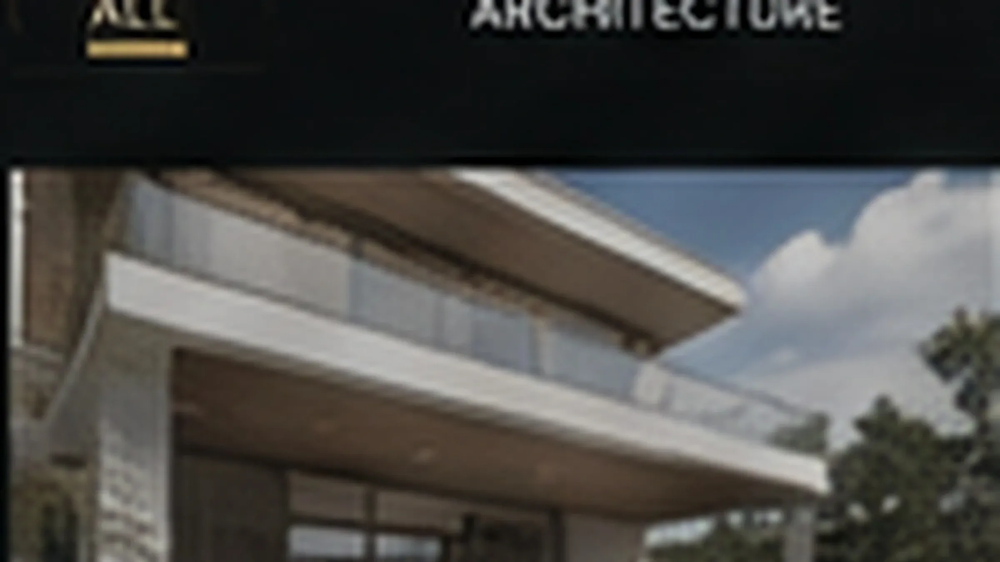

مقالههای اختصاصی درباره معماری، اجرا، کنترل کیفیت، مشارکت، بازسازی، مدیریت پروژه و خدمات مهندسی.

جزئیات زیبا وقتی ارزش دارد که بتوان آن را با مصالح موجود، توالی اجرایی روشن و تلرانس قابل کنترل ساخت. ساختپذیری یعنی واقعیتهای کارگاه، دسترسی، تداخل رشتهها، خرید و نقاط کنترل پی…

اولین حرکت معماری باید بعد از یک سؤال توسعهای باشد: این زمین واقعاً چه ظرفیت قابل دفاعی دارد؟ هندسه، دسترسی، همجواری، ضوابط، پارکینگ، ریسک گود، لجستیک اجرا و بازار هدف باید همزما…

مذاکرات مشارکت معمولاً با درصد شروع میشوند؛ درحالیکه فرآیند حرفهای از واقعیتها آغاز میشود: وضعیت مالکیت، ظرفیت زمین، سطح کیفیت، توان مالی، زمان، مسئولیتها و حق تصمیمگیری.…

مدیریت پیمان زمانی واقعاً شفاف است که خرید، تأییدها، فاکتورها، دامنه پیمانکاران جزء، برنامه زمانبندی و تغییرات قابل ردیابی باشند. درصد مدیریت فقط یک ردیف از یک سیستم کنترل بزرگتر…

گرانترین ایرادها معمولاً زمانی کشف میشوند که کار پوشانده شده است. سیستم QC باید نقاط توقف مشخصی قبل از بتنریزی، پوشش عایق، سقف کاذب، کفسازی، نما و نازککاری نهایی داشته باشد.…

کنترل میلگرد ورودی باید مدارک تحویل، مشخصات حکشده، قطرها، شرایط انبارش و الزامات پروژه را به هم متصل کند. هرجا آزمایش لازم است، هویت نمونه باید از محموله تا گزارش آزمایش قابل ردیا…

بازبینی قبل از بتنریزی باید آنقدر زود انجام شود که اصلاح ایرادها بدون معطلکردن تراک امکانپذیر باشد. آرماتور، کاور، قطعات مدفون، غلافها، پایداری قالب، دسترسی، برنامه ویبره، عمل…

کارهای تکرارشونده سازهای میتوانند یک اشتباه کوچک را در کل طبقه تکثیر کنند. پیش از بستن سیستم سقف، هندسه، تکیهگاهها، بازشوها، عبور تأسیسات، لبهها و پایداری موقت باید کنترل شوند…

سقفها، آشپزخانه، سرویسها و نما مناطق متراکم تداخل هستند. تصمیم دیرهنگام به تخریب، لکهگیری، مصالحه بصری و تأخیر منجر میشود. ترازها، دریچههای دسترسی، کفشورها، پریزها، فضاهای تج…

تخریب حس شروع پروژه میدهد اما میتواند پروژه را وارد ابهام کند. قبل از شروع، وضع موجود ثبت، اجزای حفظشونده مشخص، مسیر تأسیسات بررسی، بودجه تصمیمگیری تعریف و اقلام دیرتأمین شناسا…

نما همزمان تصویر ساختمان، پوسته محیطی و یک سیستم قابل نگهداری است. بازبینی طراحی باید مسیر آب، حرکت حرارتی، زهکشی، اتصالات، تلرانس، امکان تعویض و دسترسی نظافت را در نظر بگیرد.…

پلان کارآمد فقط راهرو را کم نمیکند؛ نور، مبلمان، حریم، دسترسی تأسیسات، انعطاف و انتظار بازار را هم حل میکند. یک پلان کوچک اما حلشده میتواند از پلان بزرگ با فضاهای پرت ارزشمندتر…

سیستم مدیریت ساختمان زمانی ارزش ایجاد میکند که حسگر، تجهیزات، هشدار، برنامه زمانی و تصمیم بهرهبرداری را به هم متصل کند. داده بیشتر لزوماً هوشمندی بیشتر نیست.…

اطلاعات نقشهبرداری طراحی و اجرا را به واقعیت متصل میکند. حدود، ترازها، انتقال آکس، کنترل نما، As-Built و پایش نشست همگی به اندازهگیری قابل ردیابی وابستهاند.…

مسیر مجوز بسته به شهر، نوع پروژه و مقررات روز متفاوت است. بااینحال تیم پروژه میتواند با سازماندهی مدارک مالکیت، نقشهبرداری، مسئولیتهای طراحی، مطالعات لازم، فهرست اصلاحات و وضعی…

برنامه کلان مقصد را نشان میدهد؛ Lookahead کار را قابل اجرا میکند. تیم پیشنیازها، محدودیتها، اطلاعات، مصالح و تداخل پیمانکاران را قبل از ورود فعالیت به برنامه هفتگی شناسایی میک…

تحویل یک فرآیند است نه یک رویداد. فهرست تجهیزات، نتایج تست و راهاندازی، نقشههای As-Built، ضمانتها، آموزش و Punch List باید بهتدریج جمع شوند.…

پروژهای که قابلیت دیدهشدن و داوری دارد معمولاً ایده روشن، پاسخ مرتبط به زمینه، انسجام فنی و مستندسازی عالی دارد. دنبالکردن یک ترفند بصری از ساخت داستان پروژهای که در پلان، مقطع…

گزارش نظارت مفید باید ایراد، محل، مرجع کنترل، ریسک، مسئول، مهلت و مدرک بستهشدن را مشخص کند. بدون پیگیری Closure، یک ایراد میتواند هفتهها تکرار شود.…

مدیریت پیمان، پیمان عمومی، طراحی-ساخت و مشارکت، ریسک، اطلاعات و حق تصمیمگیری را متفاوت توزیع میکنند. هیچ مدل واحدی برای همه پروژهها بهترین نیست.…
برای طراحی، اجرا، مدیریت پیمان، مشارکت در ساخت یا بازسازی، اطلاعات اولیه پروژه را برای تیم آرنو ارسال کنید.